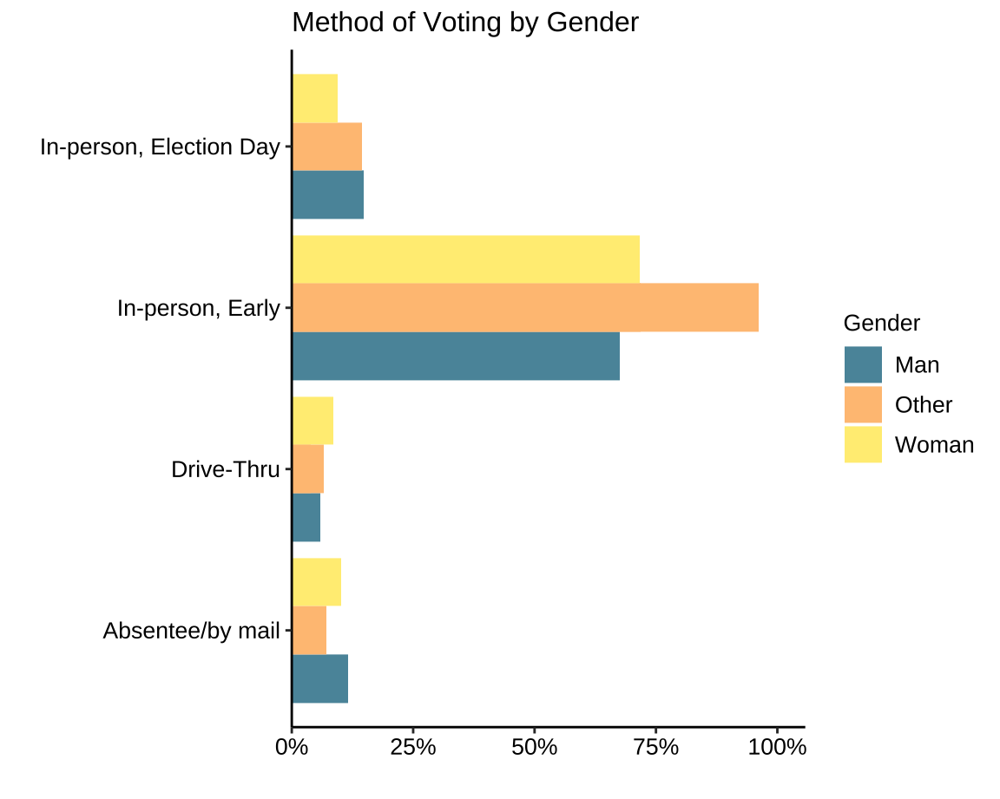
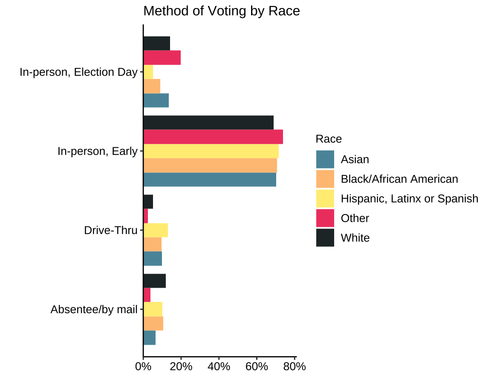
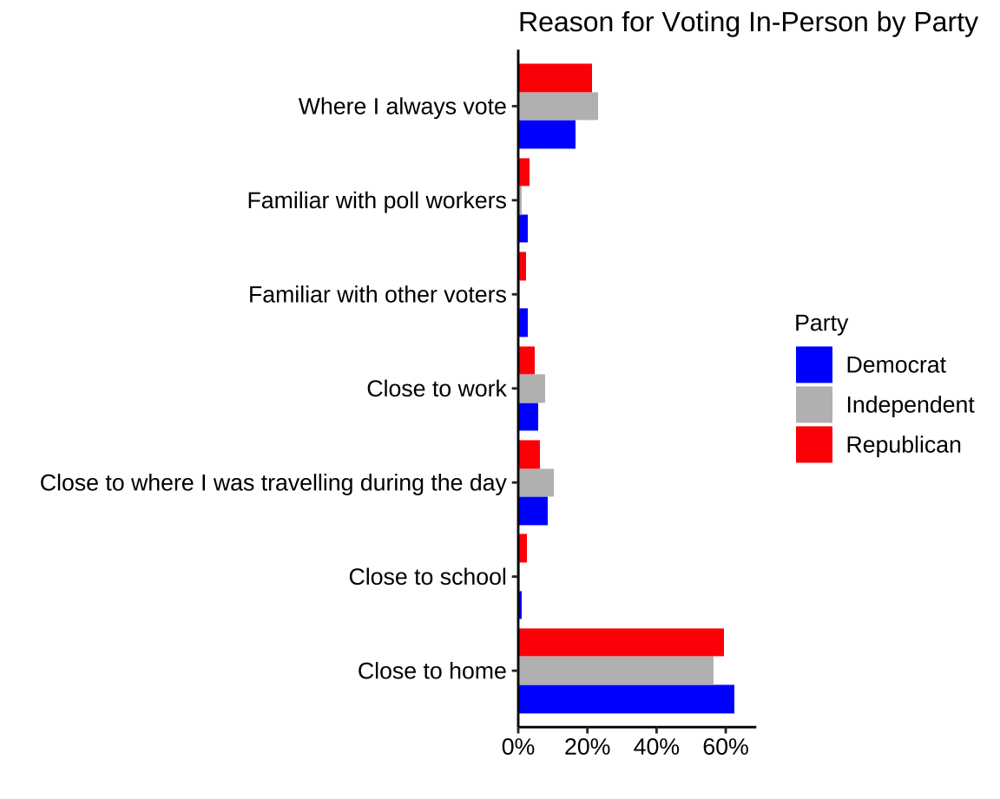
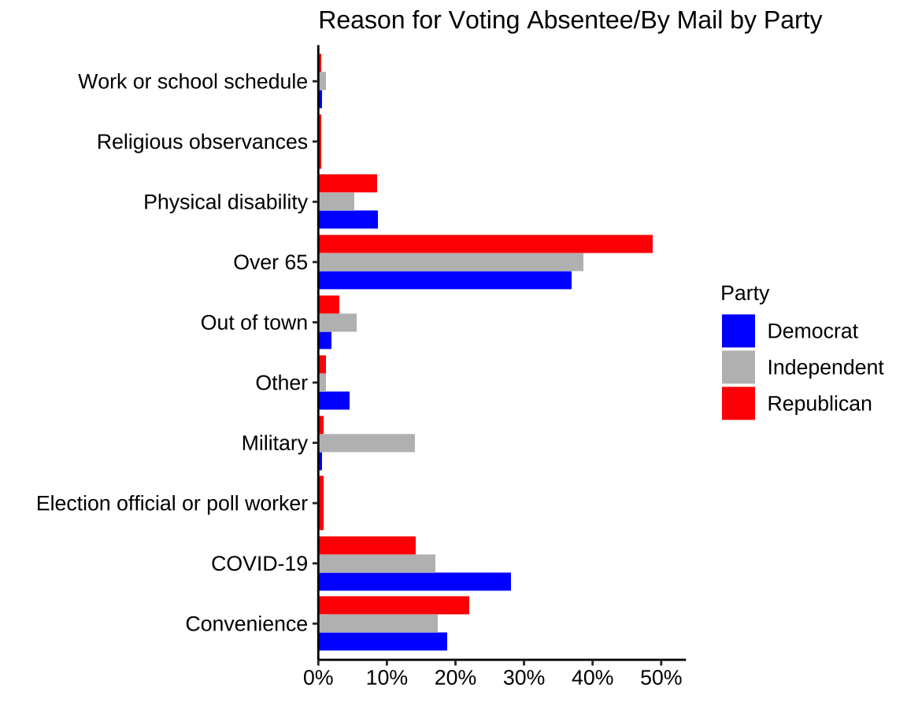
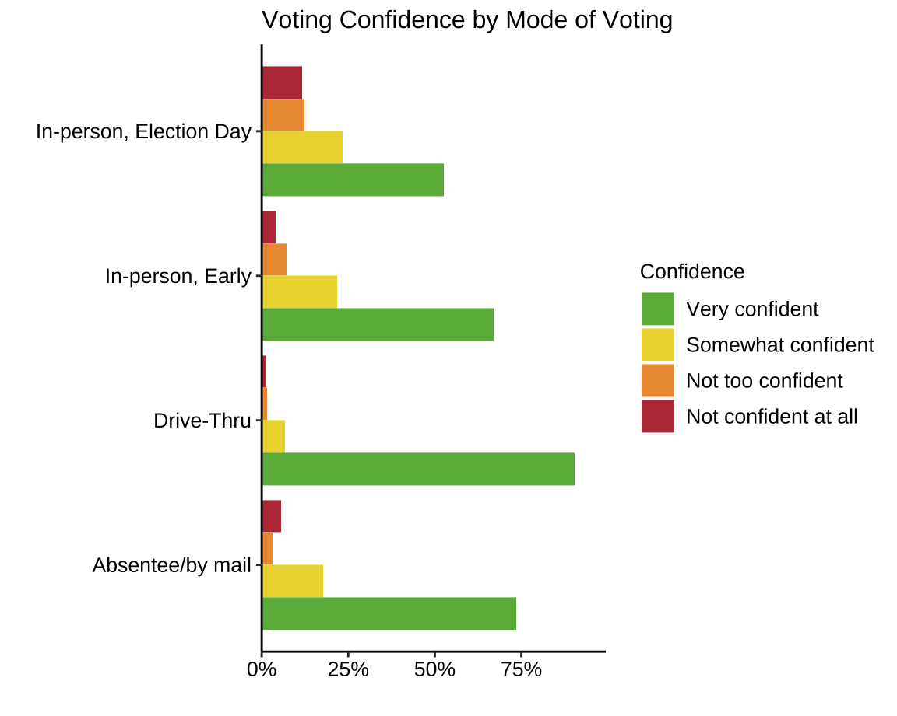
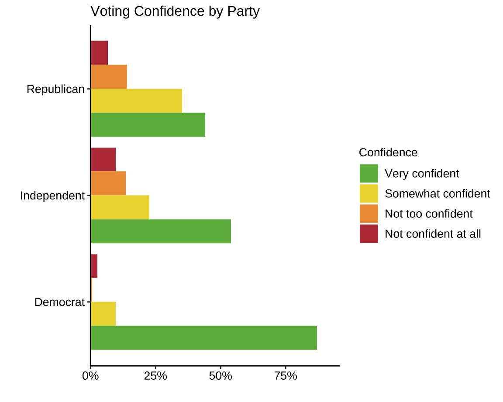

Cross Tabs
Method of Voting
Method of Voting by Party
Method of Voting by Gender

Method of Voting by Race

Method of Voting by Age

Explanation for Voting In-Person by Party

Explanation for Voting Absentee/By-Mail by Party

Explanation for Voting Drive-Thru by Party
Voter Experience by Mode of Voting
Voter Experience by Party
Voter Confidence by Method of Voting

Voter Confidence by Party
